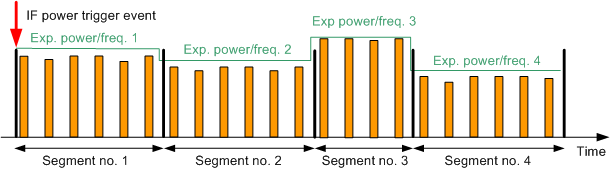
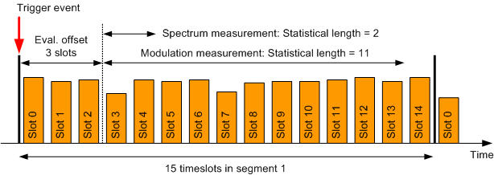
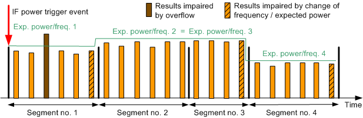

Each segment contains an integer number of timeslots and is measured at constant analyzer settings (i.e. at constant expected nominal power and RF frequency). The figure below shows a series of four segments with different lengths, powers and frequencies. Orange rectangles depict measured timeslots.

In list mode, the R&S CMW can measure code domain, modulation, phase discontinuity, UE power and spectrum results. The measured quantities can be enabled or disabled individually for each segment.
DC-HSUPA measurements are not supported in list mode. |
In addition to segments with enabled measurements (active segments), the R&S CMW can also capture segments without any enabled measurements (inactive segments). Inactive segments are useful for time-consuming UE reconfiguration. For that purpose, define alternating active and inactive segments. During the active segments, execute measurements. During the inactive segments, reconfigure the UE for the next measured segment.
The R&S CMW can capture up to 12000 timeslots (active plus inactive segments). It can measure up to 6000 timeslots (active segments). An active segment can comprise up to 1000 timeslots, an inactive segment up to 12000 timeslots.
It is possible to measure all slots of an active segment or to exclude slots at the beginning and/or the end of the segment. The evaluation offset specifies how many slots are excluded at the beginning of each segment. The statistical length defines the number of slots to be measured. The "current" result of a segment refers to the last measured slot of the statistical length. Additional statistical values (average, minimum, maximum and standard deviation) are calculated for the entire statistical length. The following figure provides a summary.
The modulation results provide also the UE power per segment. Also a UE power vs. slot measurement allows you to measure the UE power per slot. It can be enabled/disabled per segment. If enabled, it measures all slots of the segment. Similarly, the phase discontinuity vs. slot measurement provides one phase discontinuity result per slot.

If two consecutive segments are measured at different RF frequencies or expected powers, the R&S CMW changes the analyzer settings in the last timeslot of the first segment. This change usually impairs the accuracy of the measurement results for this last slot (see segments 1, 3 and 4 in the figure below). Therefore, exclude these slots from the statistical length. UE power vs. slot measurements exclude these slots automatically and return NCAP as result. In the figure below segment 2 and segment 3 have the same analyzer settings, so that the last slot of segment 2 can be measured accurately.
- Overflow (third slot of segment 1 in the figure),
- Low signal or
- Synchronization error.
If in the same time "Measure on Exception" is off, the results of the entire segment are INValid. The error cause is reported by the reliability indicator and the return code included in the measurement results. To identify the slot causing problems, you can use the UE power vs. slot measurement. This measurement returns the error cause as measurement result of the corresponding slot.

A list mode measurement can either be triggered only once, or it can be retriggered at the beginning of specified segments.
In "Once" mode, a trigger event is only required to start the measurement. As a result the entire range of segments is measured without additional trigger event. The trigger is rearmed after the measurement has been finished. Specified retrigger flags are ignored.
The "Once" mode is recommended for UL signals with accurate timing over the entire range of segments.
In "Segment" mode, the retrigger flag of each segment is evaluated. It defines whether the measurement waits for a trigger event before measuring the segment, or not. Retriggering the measurement is recommended if the timing of the first slot of a segment is inaccurate, e.g. because of signal reconfiguration at the UE. Furthermore retriggering from time to time can compensate for a possible time drift of the UE. The retrigger flag of the first segment of the measurement is always ignored (implicitly set to ON).
In the example shown below, the "Segment" mode is enabled. The retrigger flag is OFF for the second segment and ON for the third segment. Thus the measurement stops when the first and second segments have been captured and waits for a trigger event before capturing the third segment.

The list mode is essentially a single-shot remote control application. When a measurement is initiated in list mode, all defined segments are measured once. Afterwards, the results can be retrieved using FETCh commands. The parameters in the figures are set by the following remote control commands.
Parameters | SCPI commands |
|---|---|
Activate / deactivate list mode | |
Number of segments | |
Segment configuration (timeslots per segment, power and frequency) | |
Statistical length | |
Evaluation offset | |
Trigger mode | |
R&S CMWS connector | |
Retrieve results | FETCh:WCDMa:MEAS<i>:MEValuation:LIST:SEGMent<no>:... FETCh:WCDMa:MEAS<i>:MEValuation:LIST:... |
The list mode can be deactivated via command (see table above) and also via the GUI:
Go to local using the corresponding hotkey.
The active list mode is indicated in the upper right corner of the current view by the words "List Mode!". To display the current list mode settings, use the softkey/hotkey combination "Display > Select View ... > TX Measurement (Scalar"), see "Multi-Evaluation List Mode: Settings View".
Open the configuration dialog box and disable the list mode in section "Measurement Control".
Global and list mode parameters The RF settings (expected power, RF frequency) and most of the "Measurement Control" settings (timeslots per segment, statistical lengths, enable/disable results) are special list mode settings. The R&S CMW ignores the corresponding multi-evaluation parameters. All other settings are taken from the multi-evaluation measurement, e.g.:
|